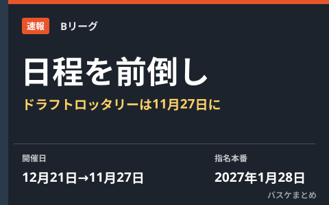

Bリーグ、ドラフトロッタリーを11月27日に前倒し 指名選手の報酬はサラリーキャップ対象外を検討

Bリーグは10月13日、「B.LEAGUE DRAFT 2027 LOTTERY」の開催日を、当初予定していた12月21日から11月27日に前倒しすると発表しました。12月の全日本大学選手権（インカレ）やコンバインの前に各クラブの指名順位を確定させ、スカウティングや編成計画を立てやすくするのが狙いです。指名本番（ドラフト）は来年1月28日の予定で変更ありません。あわせて島田慎二コミッショナーは、2027-28シーズンのドラフト指名選手の報酬をサラリーキャップの対象外とする方向で検討していることも明らかにしました。
ロッタリー前倒しの狙いと日程
「B.LEAGUE DRAFT 2027 LOTTERY」は、各クラブの指名順位を決める抽選会です。今回の発表では、当初予定の12月21日から11月27日に開催日が変更されました。12月に行われる全日本大学選手権（インカレ）や合同トライアウトのコンバインより前に順位を固めることで、各クラブがスカウティングや来季の編成計画を進めやすくすることが目的とされています。報道によれば、ドラフト開催時期の前倒しは当初第3回（2027-28シーズン）からの予定でしたが、今回それが1年早い第2回（2027年）に適用される形になりました。ドラフト本番（指名）自体は来年1月28日で変わりません。
| 項目 | 内容 |
|---|---|
| ロッタリー開催日 | 12月21日 → 11月27日に変更 |
| ドラフト本番（指名） | 2027年1月28日（変更なし） |
| 前倒しの目的 | インカレ・コンバイン前に指名順位を確定し、編成計画を立てやすくする |
指名選手の報酬、サラリーキャップ対象外を検討
あわせて島田慎二コミッショナーは、2027-28シーズンのドラフト指名選手の報酬をサラリーキャップの対象外とする方向で検討していることを明らかにしました。ドラフト時点では翌シーズンのチーム編成を見通しにくく、クラブが指名に踏み切りにくいという事情が背景にあるとされ、次回の理事会での決定を目指しているとの報道もあります。なお、この報酬見直し案は現時点では検討・調整中の段階で、最終的な決定は理事会を待つ必要があります。
9月の制度改定との関係
Bリーグは9月9日にもドラフト制度の改定を発表しており、1・2巡目の年俸は指名順位や出身カテゴリーに応じて傾斜をつける方式が示されていました。3巡目以降の年俸は一律800万円とし、育成契約選手制度が自動適用される内容です。今回の開催日前倒しとサラリーキャップの検討は、この9月の改定の延長線上にある動きといえます。
Q. なぜロッタリーだけ前倒しされたの？
A. 指名そのもの（ドラフト本番）は来年1月28日のままで、各クラブが指名順位を早く知ることで、12月のインカレ・コンバインでのスカウティングや編成準備に充てられる時間を増やすための措置です。
出典：バスケットボールキング「Bリーグがドラフトロッタリーの"前倒し開催"発表…指名選手の報酬はサラリーキャップ対象外とする方向で調整中」／共同通信配信「Ｂプレミア、報酬額に細かな傾斜 新人ドラフトの指名順で次回から」／BASKET COUNT「Bリーグがドラフト制度の改定を実施」ほか
https://basketballking.jp/news/japan/20261013/637533.html
https://ryukyushimpo.jp/kyodo/entry-5505539.html
https://www.bleague.jp/new-bleague/system/draft/